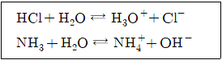
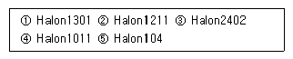
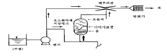
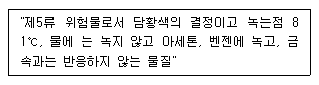

위험물산업기사 (2005-03-20 기출문제)
1과목: 일반화학
1. 금속성이 강한 원자와 비금속성이 강한 원자간의 화학결합의 종류는?
- 이온 결합
- 공유 결합
- 배위 결합
- 금속 결합
(정답률: 60%)

2. 다음 중 산과 염기에 해당되지 않는 물질은?
- 수산화 칼륨
- 암모니아수
- 크롬산
- 염화칼슘
(정답률: 44%)
3. AT(아스탄틴)의 원소가 α-선을 방출하면서 방사선 붕괴가 일어났다. 이 때 얻어지는 핵종은 어느것인가?
- Hg
- Pd
- Bi
- Os
(정답률: 47%)
4. 할로겐 원소중 화학적 성질이 활발한 순서를 나열한 것이다. 맞는 것은?
- F>Cl>Br>I
- I>Br>Cl>F
- Cl>Br>I>F
- Br>Cl>F>I
(정답률: 70%)
5. 탄소와 모래를 전기로에 넣어서 가열하면 연마제로 쓰이는 물질이 생긴다. 다음 중 어느 것인가?
- 카아버런덤
- 카아바이드
- 카아본블랙
- 규소
(정답률: 68%)
6. 다음 화합물 중에서 P3결합을 갖는 것은?
- BF3
- NH3
- PH3
- H3O+
(정답률: 44%)
7. 알칸계 탄화수소인 부탄(C4H10)의 수소 한 원자가 염소와 치환될 때 생기는 구조이성체의 수는 몇 가지인가?
- 1개
- 2개
- 3개
- 4개
(정답률: 16%)
8. 한 고체 유기물질을 정제하려고 할 때 정제과정에서 이 물질에 순수한 상태로 되었나를 알아보기 위한 조사 방법으로 가장 정확한 방법은 무엇인가?
- 비색분석
- 녹는점 측정
- 분리분석
- 용해도 측정
(정답률: 59%)
9. 물 80g 속에 소금 8g이 녹아 있다. 이때 농도는 얼마인가?(오류 신고가 접수된 문제입니다. 반드시 정답과 해설을 확인하시기 바랍니다.)
- 8.4%
- 9.1%
- 9.9%
- 10.2%
(정답률: 49%)
10. 2H2 + O2 → 2H2O의 화학 반응식과 관계 없는 법칙은?
- 배수 비례의 법칙
- 질량 보존의 법칙
- 기체 반응의 법칙
- 일정 성분비의 법칙
(정답률: 55%)
11. 다음중 배수비례의 법칙이 설명 가능한 화합물을 짝지어진 것은?
- CO, CO2
- HNO3, HNO2
- H2SO4, H2SO3
- O2, O3
(정답률: 68%)
12. 다음 산·염기 반응에 대한 설명으로 옳은 것은?

- HCl과 NH3는 산으로 작용한다.
- H2O는 양쪽성 물질이다.
- H2O의 짝산은 NH3이다.
- H3O+은 산, NH4+은 염기로 작용한다.
(정답률: 23%)
13. 다음 중 상온에서 액체상태인 포화탄화수소의 탄소는 얼마인가?
- C5 ∼ C16
- C2 ∼ C4
- C17 ∼ C30
- C5 ∼ C25
(정답률: 37%)
14. 놋그릇을 공기중에 놓아두면 푸른색의 녹이 슨다. 이 화합물은 어느 것인가?
- CuO
- Cu(OH)2CuCO3
- CuSO4
- CuSO3
(정답률: 27%)
15. 화학적 성질이 활발한 금속일수록 다음 중 어떤 성질이 강한 것인가?
- 전자를 받아들이는 성질
- 양성자를 받아들이는 성질
- 양성자를 잃는 성질
- 전자를 잃는 성질
(정답률: 54%)
16. 10g의 Na2SO4·10H2O를 100g의 물에 용해시켰다. 이 용액의 퍼센트(%)농도는 약 얼마인가? (단, Na2SO4의 화학식량은 142.0 이다.)
- 4 %
- 6 %
- 8%
- 10 %
(정답률: 27%)
17. 2 F의 전기량으로 물을 전기분해할 때 생기는 기체의 총 분자수는? (단, 아보가드로수 : 6 × 1023 개)
- 3 × 1023
- 9 × 1023
- 1.2 × 1023
- 6 × 1023
(정답률: 26%)
18. 유기 화합물 간의 반응이 무기 화합물 간의 반응에 비하여 일반적으로 반응이 느린 이유는 무엇인가?
- 이온 결합 화합물이기 때문이다.
- 높은 비등점을 가진 화합물이기 때문이다.
- 공유 결합 화합물이기 때문이다.
- 큰 분자량을 가진 화합물이기 때문이다.
(정답률: 44%)
19. 다음 중 산화 환원 반응이 아닌 것은?
- Na + H2O → NaOH + H2
- 2NaHCO3 → Na2CO3 + H2O + CO2
- 2NaCl → 2Na + Cl2
- 2H2O → 2H2 + O2
(정답률: 37%)
20. 다음 산화물중 물과 작용하여 수산화물을 형성하며 염기성을 나타내는 것은?
- Cl2O7
- SiO2
- P4O10
- Na2O
(정답률: 58%)
2과목: 화재예방과 소화방법
21. 이산화탄소 소화설비의 배관의 기준으로 옳은 것은?
- 원칙적으로 겸용이 가능하도록 할 것
- 고압식 동관을 사용할 경우 고압식은 16.5MPa 이상의 압력에 견딜 것
- 관이음쇠는 저압식의 경우 5.0MPa 이상의 압력에 견디는 것일 것
- 배관의 가장 높은 곳과 낮은 곳의 수직거리는 30m 이하일 것
(정답률: 45%)
22. 화학포에 쓰이는 기포안정제로서 적당한 것은?
- 황산알루미늄
- 탄산수소나트륨
- 사포닝
- 이산화탄소
(정답률: 42%)
23. 옥내소화전설비에서 펌프를 이용한 가압송수장치의 전양정은 다음 식에 의한 수치 이상이어야 한다. 옳은 것은? (단, h1=소방용호스의 마찰손실수두, h2=배관의 마찰손실수두, h3=낙차이며 단위는 모두 m이다.)
- H=h1+h2+h3
- H=h1+h2+h3+0.35MPa
- H=h1+h2+h3+35m
- H=h1+h2+35m
(정답률: 71%)
24. 다음 위험물 화재 시 물을 사용해서는 안되는 것은?
- 염소산칼륨
- 인화칼슘
- 황린
- 과산화칼슘
(정답률: 61%)
25. 소화약제 방사시 열량을 흡수하므로 냉각소화 및 질식, 피복소화 작용이 있는 소화약제는?
- 이산화탄소
- 탄산수소알루미늄
- 황산알루미늄
- 탄화칼슘
(정답률: 63%)
26. 특정옥외탱크저장소라 함은 저장 또는 취급하는 위험물의 최대수량이 얼마 이상의 것을 말하는가?
- 50만 리터 이상
- 100만 리터 이상
- 150만 리터 이상
- 200만 리터 이상
(정답률: 67%)
27. 분말 소화기의 약제 중 탄산수소칼륨과 요소와의 반응물로 한 것은 제 몇 종 분말인가?
- 제1종
- 제2종
- 제3종
- 제4종
(정답률: 62%)
28. 다음에서 할로겐화합물 소화약제의 성상이 상온에서 기체로만 짝지어진 것은?

- ①②
- ③④⑤
- ①②⑤
- ④⑤
(정답률: 54%)
29. 다량의 제4류 위험물 화재시 물로 소화하는 것이 적당하지 않은 이유는?
- 가연성 가스를 발생한다.
- 연소면을 확대한다.
- 인화점이 내려간다.
- 물이 열분해한다.
(정답률: 73%)
30. (C2H5)3Al의 소화 방법으로 가장 적당한 소화약제는?
- 물
- CO2
- 팽창질석
- CCl4
(정답률: 69%)
31. 다음 중 불활성기체를 봉입하는 장치를 갖추어야 하는 위험물은?(오류 신고가 접수된 문제입니다. 반드시 정답과 해설을 확인하시기 바랍니다.)
- 인화성고체
- 과산화수소
- 히드록실아민
- 알킬알루미늄
(정답률: 39%)
32. 일반적으로 가스버너는 공기와 가스를 동시에 불어넣어 연소시킨다. 이 때 공기를 막고 가스만 연소시킬 때의 연소 형태는?
- 증발연소
- 확산연소
- 혼합연소
- 표면연소
(정답률: 58%)
33. 가연성 액체의 인화위험이 높아진다고 볼 수 없는 것은?
- 증기압이 낮아진다.
- 화염전파성이 높아진다.
- 연소범위의 하한치가 낮아진다.
- 최소점화에너지가 낮아진다.
(정답률: 58%)
34. 아래 그림은 포소화설비의 포원액 혼합장치이다. 이 혼합방식의 명칭은?

- 라인프로포셔너
- 펌프프로셔너
- 프레셔프로포셔너
- 프레셔사이드프로포셔너
(정답률: 46%)
35. 분말소화약제의 주된 소화작용은?
- 질식
- 냉각
- 억제
- 부촉매
(정답률: 80%)
36. 포소화설비의 포방출구 중 고정지붕구조의 탱크에 저부포 주입법(탱크의 액면하에 설치된 포방출구로부터 포를 탱크내에 주입하는 방법)을 이용한 것은?
- Ⅰ
- Ⅱ
- 특형
- Ⅲ
(정답률: 22%)
37. 인화성액체 위험물의 화재 시 가장 효과적인 소화방법은?
- 제거소화
- 질식소화
- 냉각소화
- 억제소화
(정답률: 66%)
38. 물분무소화설비에 의해 방호할 수 있는 대상으로 가장 거리가 먼 것은?
- 석유정제 또는 유지공업 등 여러가지 장치 혹은 각종 유압 조작기계
- 주차장, 엔진실 등의 액체 연료의 사용장소
- 위험물을 취급하는 화학공장의 설비
- 휘발유, 중유 등의 가연물 액체가 바닥에 누출될 위험이 많은 작업장
(정답률: 56%)
39. 다음 화재발생 시 마른모래를 소화제로 사용할 경우 가장 적당하지 않은 것은?
- K2O2
- HClO4
- C2H5OC2H5
- Na
(정답률: 40%)
40. 가압식의 분말소화설비에는 얼마 이하의 압력으로 조정할 수 있는 압력조정기를 설치하여야 하는가?
- 2.0MPa
- 2.5MPa
- 3.0MPa
- 5MPa
(정답률: 64%)
3과목: 위험물의 성질과 취급
41. 다음 위험물질 중 보호액으로서 물이 적당한 것은?
- 인화석회
- 황린
- 금속나트륨
- 금속마그네슘
(정답률: 79%)
42. 다음 중 위험물안전관리법상 제4류 위험물 알코올류에 속하지 않는 것은?
- 메틸알코올
- 변성알코올
- 알릴알코올
- 이소프로필알코올
(정답률: 35%)
43. 법령상 산화성액체 위험물에 해당되지 않는 것은?
- H2O2
- HNO3
- HCl
- HClO4
(정답률: 51%)
44. 다음 중 물과 작용하여도 가연성 가스를 발생하지 않고, 공기중에서 점화시켜도 연소하지 않는 물질은?
- 인화칼슘
- 산화칼슘
- 탄화칼슘
- 금속나트륨
(정답률: 58%)
45. 제4류 위험물 옥외저장탱크 중 대기밸브부착 통기관은 몆kPa 이하의 압력차이로 작동할 수 있어야 하는가?
- 2kPa
- 3kPa
- 4kPa
- 5kPa
(정답률: 57%)
46. 다음은 아세톤과 아세트알데히드의 성질에 대하여 설명한 것이다. 틀린 것은?
- 소화시에는 포소화제가 별로 효과가 없다.
- 어떤 것이나 물에 잘 녹고 유기물을 잘녹인다.
- 어떤 것이든지 무색의 액체이고 대단히 휘발성이 강하다.
- 아세톤은 물보다 가볍고 아세트알데히드는 물보다 무겁다.
(정답률: 44%)
47. 소독제로 사용하는 옥시풀은 약 몇 %의 과산화수소를 말하는가?
- 3%
- 6%
- 13%
- 36%
(정답률: 44%)
48. 제4류 위험물 중 제1석유류 저장, 취급하는 장소에서 정전기를 방지하기 위한 방법으로 볼 수 없는 것은?
- 가급적 습도를 낮춘다.
- 주위 공기를 이온화시킨다.
- 위험물 저장, 취급설비를 접지시킨다.
- 사용기구 등은 도전성 재료를 사용한다.
(정답률: 54%)
49. 옥내저장창고의 바닥에 물이 스며 나오거나 스며들지 아니 하는 구조로 해야 하는 위험물은?
- 과염소산염류
- 니트로셀룰로오스
- 황린과 황화린
- 트리에틸알루미늄
(정답률: 62%)
50. 위험물 지하탱크 저장소의 탱크의 매설기준으로 부적합한 것은?
- 탱크와 내벽과 사이는 상,하,좌,우로 0.⑤m 이상의 간격을 둔다.
- 탱크 본체 윗 부분은 지면으로 부터 0.6m 이상의 깊이로 매설한다.
- 탱크를 인접하여 설치하는 경우에는 그 상호간에 1m 이상의 간격을 둔다.
- 2개 이상의 탱크 용량의 합계가 지정수량의 100배 미만일 경우에는 상호간격을 0.5m 이상으로 한다.
(정답률: 44%)
51. 다음은 어떤 위험물에 대한 설명인가?

- T.N.T
- 질산칼륨
- 메틸에틸케톤
- 케로신
(정답률: 51%)
52. 다음은 위험물의 혼합시 일어나는 현상에 관한 설명이다. 틀린 것은?
- 마그네슘은 산이나 온수와 작용하여 산소를 발생하고 산화마그네슘이 된다.
- 황린과 황은 어떤 비율로 혼합되어 있어도 가온하면 격렬하게 타거나 폭발한다.
- 아연 분말과 황은 어떤 비율로 혼합되어 있어도 가온 하면 폭발한다.
- 5% 이상의 과산화수소와 철분이나 구리분은 혼합되어 있으면 위험하다.
(정답률: 49%)
53. 특수인화물:300L, 알콜올류:400L, 제1석유류(비수용성액체):200L를 저장하고 있을 경우 환산 지정수량은 몇배인가?
- 4배
- 6배
- 8배
- 10배
(정답률: 60%)
54. 법령상 소화설비의 설치기준 중 위험물의 소요단위 계산은 1소요단위가 지정수량의 몇 배인가?
- 10배
- 15배
- 20배
- 50배
(정답률: 76%)
55. 과산화칼슘의 성질에 관한 설명 중 틀린 것은?
- 백색 또는 담황색 분말이다.
- 염산과 반응하여 과산화수소가 생성된다.
- 물에 잘 용해되어 산소를 발생시키며 에탄올, 에테르에 녹지않는다.
- 수화물이 포함된 것을 가열하면 약 100℃부근에서 결정수를 잃고 분해온도에서 폭발적으로 산소를 방출한다.
(정답률: 56%)
56. 위험물을 수납한 운반용기의 외부에 표시하여야 할 사항이 아닌 것은?
- 위험등급
- 위험물의 수량
- 위험물의 품명
- 안전관리자의 이름
(정답률: 78%)
57. 다음 물질이 공기 중에서 연소할 때 그으름이 나지 않는 것은?
- 가솔린
- 채종유
- 메탄올
- 경유
(정답률: 44%)
58. 위험물안전관리법에서 정의하는 "특수인화물" 범주에 해당 되는 것은?
- 1기압에서 인화점이 100℃ 이하 인것
- 1기압에서 인화점이 -20℃이하 이고, 비점이 40℃ 이하 인것
- 1기압 20℃에서 고상이지만 40℃이상에서 액상이 되고, 발화점이 150℃이하 인것
- 1기압 40℃에서 고상이지만 50℃이상에서 액상으로 되어 인화점이 -20℃이하이고, 비점이 40℃이하 인 것
(정답률: 65%)
59. 위험물안전관리법상 간이탱크저장소의 1개의 용량은?
- 300L이하
- 600L이하
- 1000L이하
- 1200L이하
(정답률: 64%)
60. 법령상 적재하는 위험물의 성질에 따라 일광의 직사로부터 보호하기 위하여 차광성 유효덮개를 해야하는 위험물은?
- S
- Mg
- H2SO4
- HClO4
(정답률: 41%)